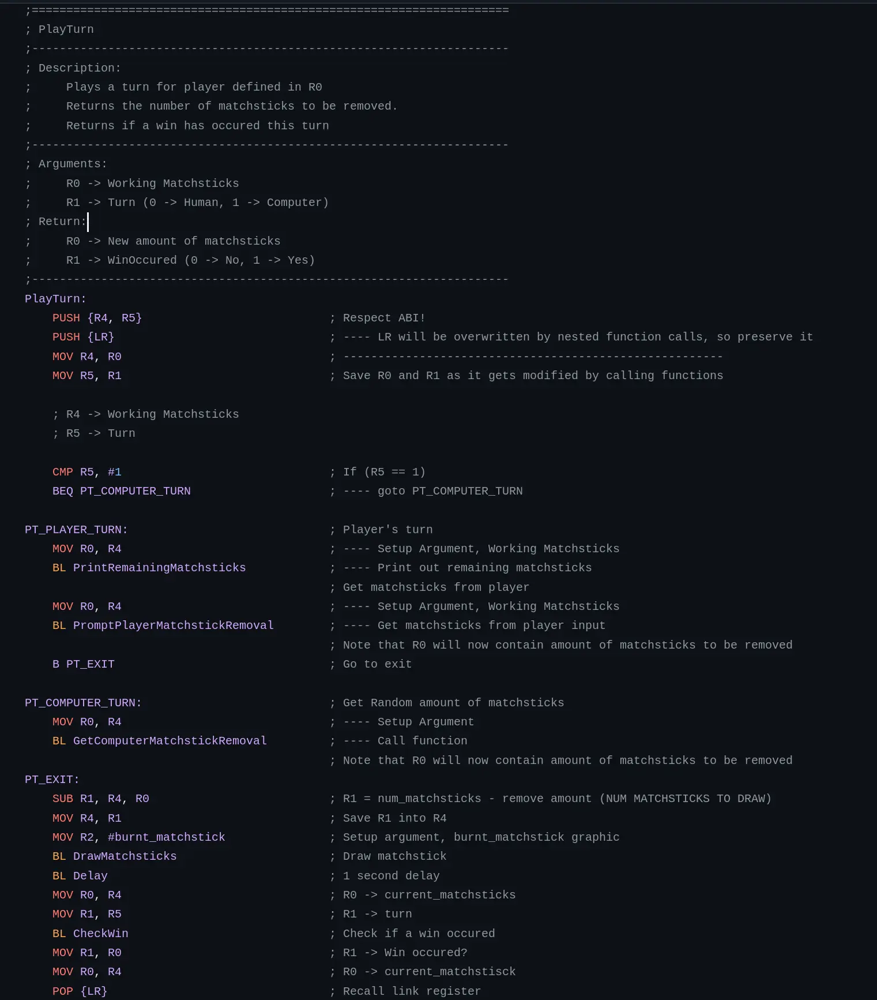
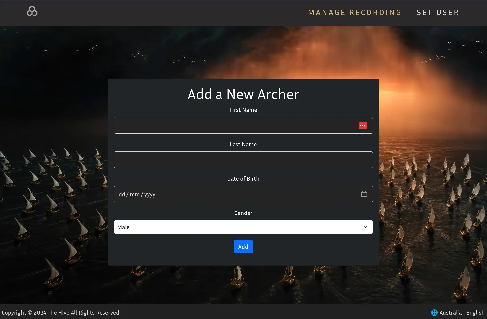
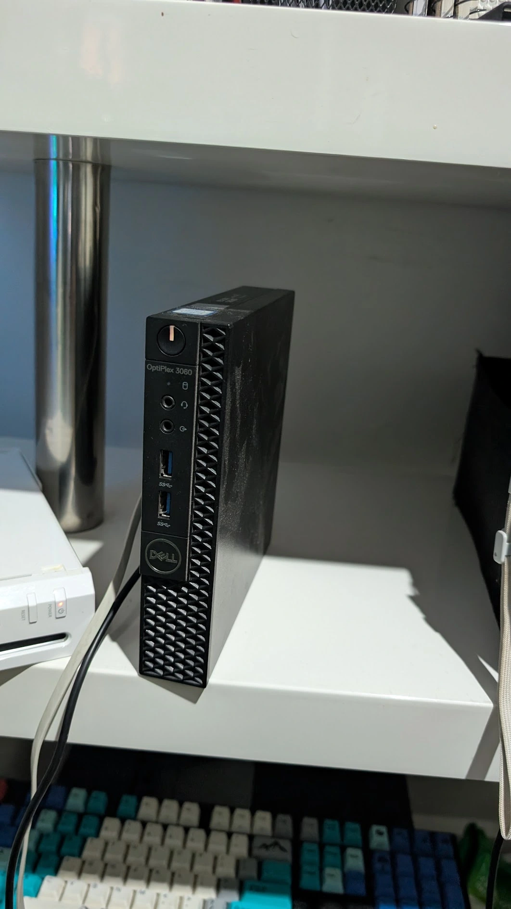

Signals
A grid-based puzzle game that is still undergoing development. Developed in Unity, it is my biggest undertaking, to-date.
You can play the beta down below and check out all the documentation too!

Software Developer & Recreational Programmer
Hello I'm
Dhanveer
______________
|| ||
|| $ rm -rf /*||
|| ||
|| ||
||____________||
|______________|
\\############\\
\\############\\
\ ____ \
\_____\___\____\
GitHub |
Email |
Résumé |
LinkedIn
A grid-based puzzle game that is still undergoing development. Developed in Unity, it is my biggest undertaking, to-date.
You can play the beta down below and check out all the documentation too!
Matchsticks was a game written in ARM Assembly to be run on the ARMlite simulator.
Note: this project was originally part of a uni assignment. I was proud of what I accomplished and I received 100%
Please watch the video!

Harchery is a PHP full-stack CRUD web application which I architected as part of a university project.
What makes this application special is that it uses a custom MVC architecture which I developed on my own. Since this was a group project, I also incorporated Docker to make collaborations easier.

Everything you are reading right now was streamed to you from the little PC you see to the right!
